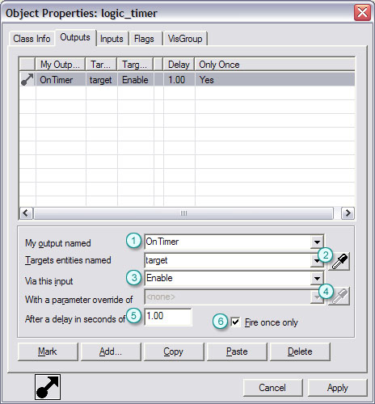
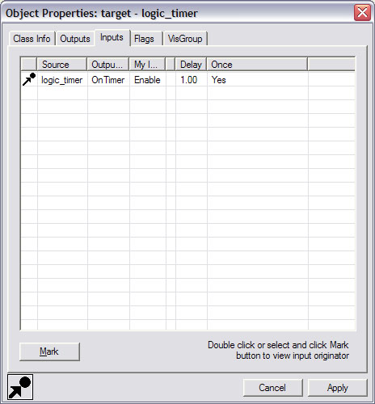

Entity I/O
One of the most important changes to map making for the Source engine has been Entity I/O. Whereas older versions of the engine relied on the target and targetname keyfields to send simple impulses to an entity, the entity I/O system allows for complex communication between entities. This is done using entity inputs and outputs, that are joined by connections. Using this simple method, entities can easily trigger events based on state changes and work in tandem with other entities in a more atomic, logical and powerful way than previously possible.
Overview
Entities have two methods for communication: sending an output to another entity, or receiving an input from another entity. One entity may send an output when it is killed to another entity's input which causes it to change color. That same output could also be used to trigger another entity's spawning input. The outputs are matched to the inputs via a connection, which controls what extra data is relayed to the receiver, how much of a delay there is before the output is received, and whether the output should be allowed to be sent again later. Outputs can be linked to any input and vice versa. This allows complex and powerful interactions between entities.
As an example, a logic_timer entity may send an OnTimer output, which triggers when the time condition is met for the entity. That output might be hooked to the Show input on an env_sprite, causing it to become visible when the timer has reached its desired time. You could also hook the OnTimer output for the logic_timer to a SparkOnce input on an env_spark to cause it to emit sparks. By using the connection properties, you could also cause the output to be triggered after a two second delay, or to trigger once but never again.
For users more familiar with the original Half-Life method of entity communication, the targetname and target fields are now obsolete and the entity I/O system is a superset of that functionality. Instead of a trigger_multiple entity only firing its target entity, it may now use any number of its outputs to do the same, including: OnStartTouch, OnEndTouch, OnTouch, etc. These outputs may be connected to an arbitrary number of entities all at once with unique delays per output, making multi-managers obsolete as well. Likewise, the killtarget field is now replaced by connecting an output to the Kill input of another entity.
Outputs
Outputs are events that are fired when an entity's state changes. This could be a timer reaching its end, a button being pressed or a door coming to a close. Any number of outputs can be specified by a programmer internally in an entity to trigger on any number of criteria. Specifying outputs is done in the Outputs tab in an entity's properties. The Ouputs tab of the Object Properties dialog displays all the outputs that are connected from this entity to other entities.
|  |
1. Name of the output to be triggered. 2. Name of the entity to receive the output (click an entity with Eye Dropper tool to paste its name here). 3. Input that will receive the output on the target entity. 4. Parameter override to use if data is accepted by the target input. Often this is a number used by the input function (see Inputs section below). 5. Amount to delay sending the output (in seconds). 1/10th of a second is expressed as "0.1" seconds. 6. Whether to only fire the output once and never again. |
Inputs
|  |
Inputs connect to outputs of any type. Here we see the Inputs tab on the Object Properties dialog. It shows all of the outputs that are connected from other entities to this entity. Because any output can connect to any input, there are a multitude of combinations that can be used to make complex interaction occur. Timers can orchestrate a countdown sequence using blinking sprites, sounds and special effects all without any need for special entities. By clicking the Mark button or double-clicking on an entry in the list, the user is able to go to the entity sending the output to the input in question. If a connection is displayed in red, it is invalid. This means that either the output does not exist in the source entity, or the input is not present in the destination entity. Invalid connections are benign but should be fixed before map compilation because the Check For Problems menu command will report them as an error. |
Debugging
Because the nature of how entities communicate has become more complex and powerful, so too has the debugging capabilities of the engine to help you track down problems. If a chain of I/O logic is not working as expected, the tools below will aid greatly in solving the error.
| ent_developer |
By setting this console variable to a value of "2", you'll receive a detailed log of how the entities are interacting via the entity I/O system. This is useful for seeing the exact chain of events taking place in complex interactions. |
| ent_messages_draw |
Setting this console variable to a value of "1" will display visual information about how entities are communicating with one another. This is very similar to using the ent_developer console variable, but can sometimes be more immediately intuitive to the viewer. |
| ent_fire (entity name, input name, input value) |
This console command allows you to manually fire inputs on an entity from the console. This can be very useful for testing settings for entities in realtime. To fire the "Open" input for an entity named "testentity" with an input parameter of "3", you would type: ent_fire testentity open 3 |
| ent_pause |
This command pauses entities in the map. If entered again, the entities will resume their normal behavior. This is most useful when use with the ent_step command, described below. |
| ent_step |
When used with the ent_pause console command, this command allows the user to slowly step through an entity's chain of execution for input and output. Any number of steps can be iterated through at one time, as specified by a value entered after the command (i.e. "ent_step 3" would execute three steps at once). |
© 2004 Valve Corporation. All rights reserved. Valve, the Valve logo, Half-Life, the Half-Life logo, the Lambda logo, Steam, the Steam logo, Team Fortress, the Team Fortress logo, Opposing Force, Day of Defeat, the Day of Defeat logo, Counter-Strike, the Counter-Strike logo, Source, the Source logo, Hammer and Counter-Strike: Condition Zero are trademarks and/or registered trademarks of Valve Corporation. Microsoft and Visual Studio are trademarks and/or registered trademarks of Microsoft Corporation. All other trademarks are property of their respective owners.